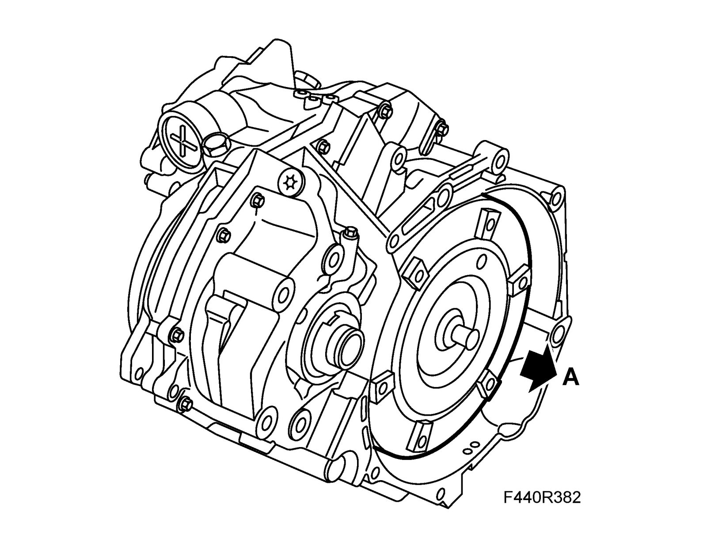
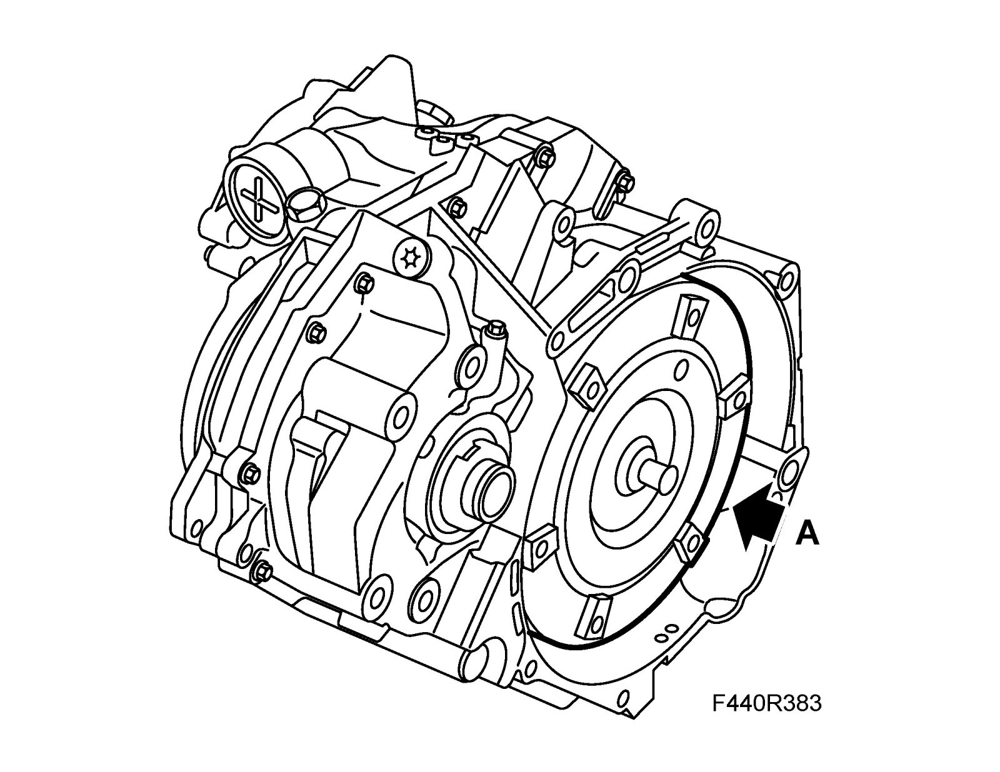

Torque Converter: Service and Repair
Torque converterTo remove
1. Remove the gearbox. See Automatic transmission assembly.
2. B207: Fit KM-574 Handle, torque converter.
3. Lift out the torque converter (A). Collect any spilled oil.

To fit
1. Align the torque converter (A).

2. Check that the torque converter has reached the correct position by placing a steel ruler on the torque converter shell's mating surface and measure the distance between the mating surface and the driver plate contact surface on the torque converter.
B207: The distance should be: min. 9 mm.
3. Fit the gearbox, see Automatic transmission assembly.